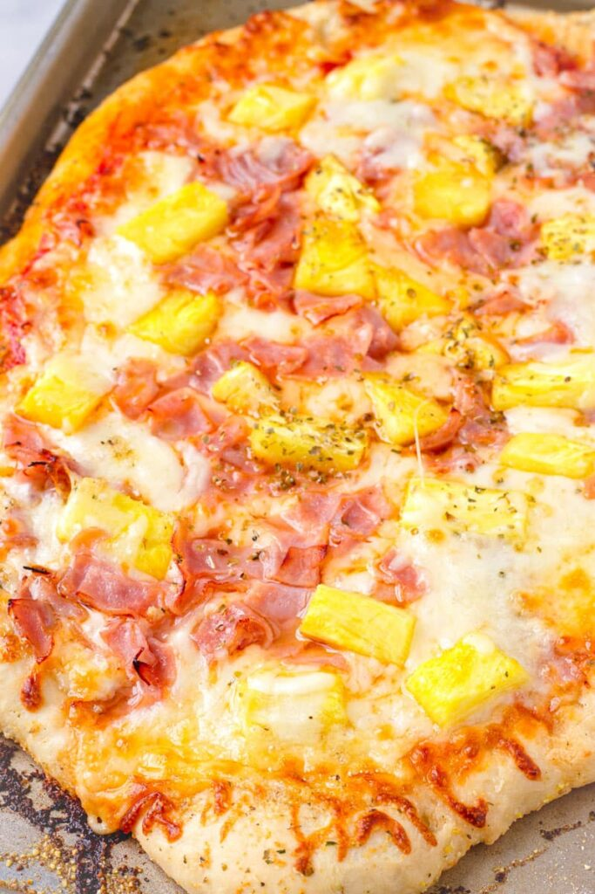

Pizza Recipe

Description
This Hawaiian Pizza is simple and easy to make. With fresh ingredients that you
can find from your local grocery store, there is no reason for you to not give
this recipe a try. Made with fresh pineapples, ham, and spices as the toppings.
You can make your own dough or use store-bought! Makes one 12-inch pizza.
Ingredients
- Store-bought pizza dough
- 1/2 cup pizza sauce (plus more to your liking)
- 1 1/2 to 2 cups shredded mozzarella cheese
- 1/2 cup diced deli ham (plus more to your liking)
- 1/2 cup fresh diced pineapple, thoroughly patted dry (plus more to your liking)
- Dried oregano to your liking
Instructions
- Preheat oven to 350 degree F
- Start by adding pizza sauce to the dough. Make sure to leave atleast 1/2 inch space
between the sauce and outer edge of the pizza to allow the crust to form.
- Add the mozzarella cheese.
- Add your ham, pineapple, and oregano.
- Bake for 25 minutes until bubbly and the edges are golden brown.